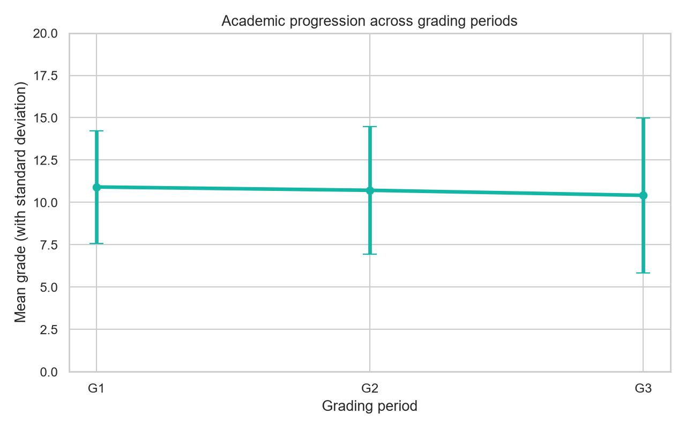
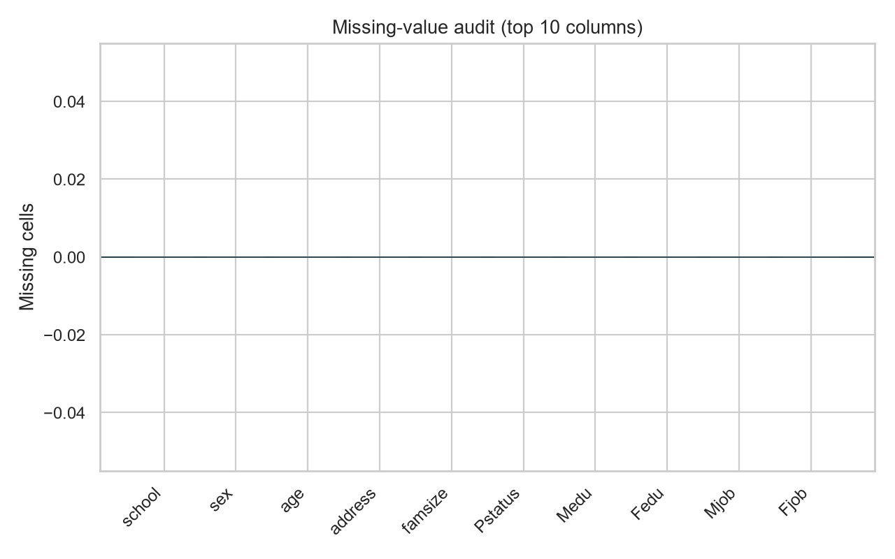
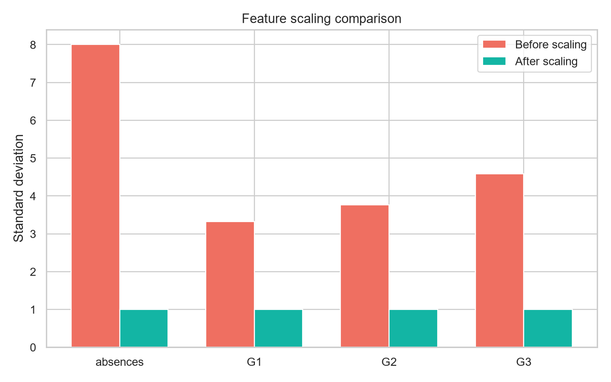
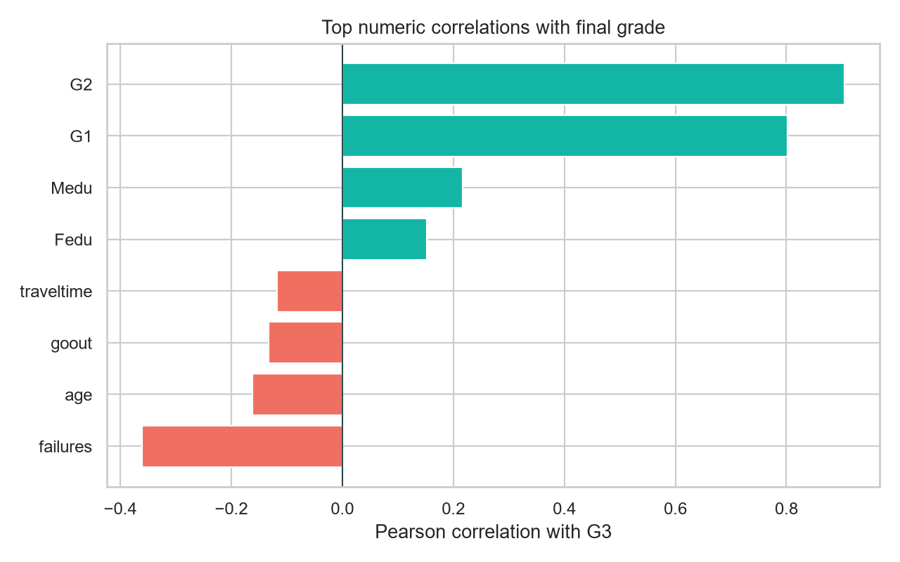
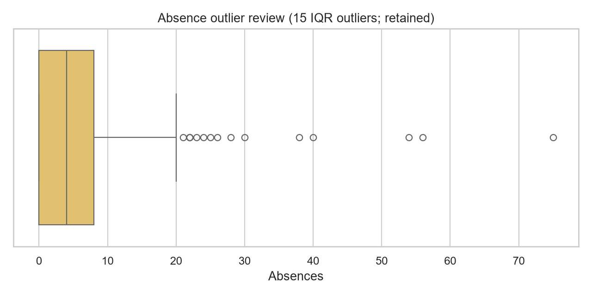

Math students in the selected dataset
EXECUTIVE OVERVIEW
Can we predict a
student's final grade?
We use academic, demographic and lifestyle information to estimate final mathematics performance after the second grading period.
The decision
Use the prediction as a screening signal for teacher review — never as an automated grade or disciplinary decision.
Predicted final gradeMODEL OUTPUT
12.4/ 20
80.3%variance explained
1.21 ptsaverage error
AT A GLANCE
One project, four answers
Everything a reviewer needs to understand the problem, evidence and decision in under three minutes.
Academic, social and demographic variables
Random Forest after training-only tuning
Mean absolute error in grade points
02 / DATA EXPLORATION
What did the data reveal?
EDA helped us decide which signals matter, which claims to avoid, and when the prediction can responsibly be made.
TARGET DISTRIBUTION
G3 · 0–20Final grades are spread across the scale
Insight: G3 has a mean of 10.42 and standard deviation of 4.58, giving the regression task meaningful variation to explain.
STRONGEST SIGNAL
r = 0.905Second-period grade leads the story
G2
0.905
G1
0.801
Failures
−0.360
Study time
0.098
Interpretation: G1 and G2 are predictive because they are available after the relevant grading periods — not because they prove causation.
BEHAVIOURAL PATTERN
Failures vs final grade
Insight: Students with more previous failures have lower average G3; this is a risk signal, not a causal conclusion.
WHAT NOT TO OVERSTATE
Absences are weak on their own
correlation = 0.034
Insight: Absences are retained as a candidate feature, but not used as a standalone intervention rule.
PREPROCESSING & QUALITY CHECKS
How did we prepare the data?
These checks make the modelling decisions visible instead of hiding them inside the pipeline.
ACADEMIC PROGRESSION
G1 → G2 → G3 is the valid time view

Why this chart: The records are cross-sectional, so we show grading-period progression rather than claiming a calendar time series.
MISSING-VALUE AUDIT
0 missingNo missing cells were found

Decision: No imputation was needed; the audit remains visible as evidence.
SCALING
Numeric features become comparable

Decision: StandardScaler is fitted inside each training fold, preventing test-data leakage.
CORRELATION ANALYSIS
Top relationships with G3

Reminder: Correlation guides feature reasoning; it does not establish cause and effect.
OUTLIER REVIEW
Absences were retained, not deleted

Decision: Outliers are plausible student records, so removing them without domain evidence would risk bias.
03 / MODEL EVALUATION
Evidence before selection
We compared a baseline, a linear model and two tree ensembles using the same leakage-safe pipeline and five-fold cross-validation.
CROSS-VALIDATED COMPARISON
5 folds · training data onlyLower RMSE is better
01Random Forest1.507BEST
02Extra Trees1.637
03Ridge2.074
—Mean baseline4.563
Why Random Forest? It achieved the lowest cross-validated RMSE and captured non-linear relationships better than Ridge, while clearly outperforming the mean baseline.
Random Forest performance
0.803 R²
2.008RMSE1.208MAE79test students
Average error≈ 1.21 grade points
PREDICTION QUALITY
Test set · n = 79Actual vs predicted grades
Points closer to the diagonal indicate closer predictions. The model is useful for screening, but individual errors remain and must be reviewed.
MODEL INTERPRETATION
What the model used most
G2
77.9%
Absences
11.5%
Reason: home
1.6%
Grade progress
1.1%
Caution: Feature importance explains model behaviour; it does not prove that changing a feature will change a student's grade.
04 / RECOMMENDATION
Turn a prediction into
responsible action.
After G2 is available, flag students whose predicted final grade is below 10 for a teacher or counsellor conversation.
Human review required
The model is a screening aid — not the sole basis for grading, exclusion or discipline.
TEST SET SCREENED79
37 flagged
46.8%referred for review
LIMITATIONS Historical 2005–2006 Portuguese school data · Small sample · No external validation · G1/G2 mean this is an after-G2 model · Prediction is not causation